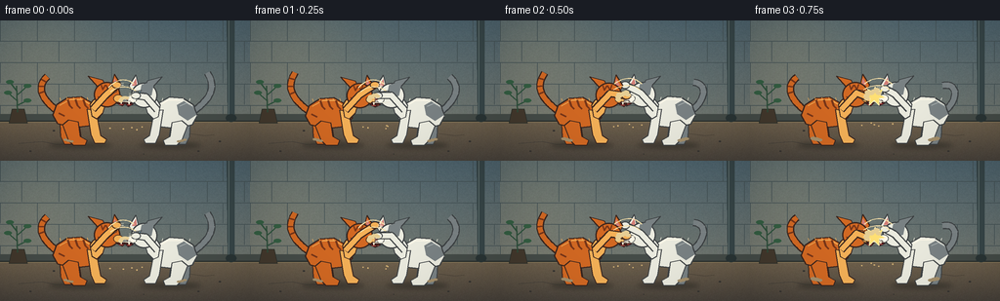
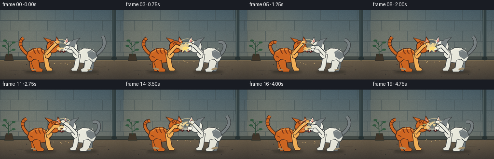

CODING AGENTS AS PIXEL WORLD MODELS
traex/GPT-5.6-Sol · instance_preservation_0005
点击播放 · 原生 RGB 像素
逐轮保存的候选
回放视频、检查图与代码变化。
每份候选均可单独播放。实际图片检查记录在下方工具轨迹中。
候选 01播放与检查图
点击播放 · 原生 RGB 像素


展开代码变化
--- 上一保存版本
+++ 本次保存版本
@@ -0,0 +1,387 @@
+from pathlib import Path
+import math
+
+import numpy as np
+from PIL import Image, ImageDraw, ImageFilter
+
+import artifact_io
+
+
+# Deterministic hand-drawn animation. Everything is rendered at 3x resolution
+# and reduced at the end, which gives the small output clean, anti-aliased edges.
+W, H, N = 256, 144, 20
+S = 3
+SW, SH = W * S, H * S
+ROOT = Path(__file__).resolve().parent
+
+
+def sc(v):
+ return int(round(v * S))
+
+
+def pts(seq):
+ return [(sc(x), sc(y)) for x, y in seq]
+
+
+def ellipse(draw, box, fill, outline=None, width=1):
+ draw.ellipse(tuple(sc(x) for x in box), fill=fill, outline=outline, width=sc(width) if outline else 1)
+
+
+def polygon(draw, p, fill, outline=None, width=1):
+ draw.polygon(pts(p), fill=fill)
+ if outline:
+ draw.line(pts(list(p) + [p[0]]), fill=outline, width=sc(width), joint="curve")
+
+
+def line(draw, p, fill, width=1, joint="curve"):
+ draw.line(pts(p), fill=fill, width=sc(width), joint=joint)
+
+
+def bezier(p0, p1, p2, p3, count=20):
+ out = []
+ for q in np.linspace(0.0, 1.0, count):
+ r = 1.0 - q
+ out.append((r**3*p0[0] + 3*r*r*q*p1[0] + 3*r*q*q*p2[0] + q**3*p3[0],
+ r**3*p0[1] + 3*r*r*q*p1[1] + 3*r*q*q*p2[1] + q**3*p3[1]))
+ return out
+
+
+def make_background():
+ """A static, textured courtyard so only intentional elements move."""
+ rng = np.random.default_rng(411)
+ yy, xx = np.mgrid[0:H, 0:W]
+ wall_top = np.array([79, 101, 111], dtype=float)
+ wall_bottom = np.array([115, 120, 112], dtype=float)
+ mix = np.clip(yy / 110.0, 0, 1)[..., None]
+ arr = wall_top * (1 - mix) + wall_bottom * mix
+ warm = np.exp(-((xx - 38) ** 2 + (yy - 21) ** 2) / 6500.0)[..., None]
+ arr += warm * np.array([24, 15, 3])
+ grain = rng.normal(0, 2.0, (H, W, 1))
+ arr += grain
+
+ ground = yy >= 103
+ gy = np.clip((yy - 103) / 41, 0, 1)[..., None]
+ ground_col = np.array([111, 97, 77]) * (1 - gy) + np.array([73, 67, 60]) * gy
+ arr = np.where(ground[..., None], ground_col + grain * 0.65, arr)
+ arr = np.clip(arr, 0, 255).astype(np.uint8)
+ im = Image.fromarray(arr, "RGB").resize((SW, SH), Image.Resampling.BICUBIC)
+ d = ImageDraw.Draw(im)
+
+ # Brickwork, softened by distance.
+ mortar = (69, 83, 86)
+ for y in [21, 43, 65, 87]:
+ line(d, [(0, y), (256, y)], mortar, 0.65)
+ for row, y in enumerate([0, 21, 43, 65, 87]):
+ off = 16 if row % 2 else 0
+ for x in range(-off, 273, 38):
+ line(d, [(x, y), (x, min(y + 21, 103))], mortar, 0.55)
+ # A worn base course and the contact seam.
+ polygon(d, [(0, 96), (256, 96), (256, 104), (0, 103)], (69, 76, 72))
+ line(d, [(0, 103), (256, 103)], (43, 49, 47), 1.2)
+ line(d, [(0, 104), (256, 104)], (145, 126, 93), 0.5)
+
+ # Drain pipe on the far right.
+ polygon(d, [(232, 0), (240, 0), (240, 101), (233, 101)], (55, 70, 72))
+ line(d, [(234, 0), (234, 101)], (112, 128, 126), 0.8)
+ ellipse(d, (231, 96, 242, 104), (42, 53, 53))
+
+ # Small plant silhouette at left, kept behind the action.
+ polygon(d, [(9, 105), (28, 105), (25, 91), (12, 91)], (67, 57, 45), (43, 48, 42), 0.8)
+ line(d, [(18, 94), (17, 67)], (48, 78, 59), 1.2)
+ for p in [((17, 82), (8, 74)), ((18, 76), (28, 67)), ((17, 87), (28, 82)), ((17, 72), (10, 63))]:
+ line(d, [p[0], p[1]], (45, 82, 59), 1.2)
+ x, y = p[1]
+ ellipse(d, (x - 4, y - 2, x + 4, y + 2), (52, 94, 66))
+
+ # Hairline cracks and scattered pebbles anchor the floor.
+ line(d, [(19, 126), (43, 124), (58, 127), (75, 126)], (60, 57, 53), 0.65)
+ line(d, [(194, 116), (210, 118), (219, 117)], (66, 59, 51), 0.55)
+ for x, y, r in [(31, 134, 1), (55, 113, 1.2), (203, 134, 1), (225, 124, 1.2), (147, 137, .8)]:
+ ellipse(d, (x-r, y-r/2, x+r, y+r/2), (53, 51, 48))
+
+ # Gentle depth-of-field treatment, then restore enough texture to feel tactile.
+ im = im.filter(ImageFilter.GaussianBlur(sc(0.12)))
+ return im
+
+
+BG = make_background()
+
+
+def local(cx, facing, u, v):
+ return cx + facing * u, v
+
+
+def L(cx, facing, sequence):
+ return [local(cx, facing, u, v) for u, v in sequence]
+
+
+def draw_shadow(layer, cx, y, rx, alpha=90):
+ d = ImageDraw.Draw(layer)
+ d.ellipse((sc(cx-rx), sc(y-3), sc(cx+rx), sc(y+3)), fill=(20, 25, 24, alpha))
+
+
+def draw_dust(im, frame, impact):
+ """Fixed-seed particles whose paths are coherent from frame to frame."""
+ if impact <= 0:
+ return
+ d = ImageDraw.Draw(im, "RGBA")
+ # Center impact puffs.
+ phase = frame % 5
+ age = phase / 4.0
+ for i in range(7):
+ ang = -2.85 + i * .28
+ rad = 5 + age * (5 + (i % 3) * 2)
+ x = 128 + math.cos(ang) * rad
+ y = 84 + math.sin(ang) * rad - age * 2
+ rr = (2.2 + age * 2.8) * (1 - 0.45 * age)
+ a = int(90 * impact * (1 - .55 * age))
+ ellipse(d, (x-rr, y-rr*.65, x+rr, y+rr*.65), (231, 207, 150, a))
+ # Dust at hind paws.
+ for base, direction in [(73, -1), (183, 1)]:
+ for i in range(3):
+ x = base + direction * (i * 3 + age * 3)
+ y = 124 - i * .8 - age * 2
+ rr = 2.0 + age * 1.6
+ ellipse(d, (x-rr, y-rr*.5, x+rr, y+rr*.5), (166, 145, 109, int(70*impact)))
+
+
+def draw_motion_marks(im, frame, strength):
+ d = ImageDraw.Draw(im, "RGBA")
+ # Alternating curved speed trails make the paw exchange unambiguous.
+ parity = (frame // 2) % 2
+ if parity == 0:
+ curves = [((111, 69), (118, 60), (129, 58), (137, 65)),
+ ((113, 73), (121, 67), (130, 66), (139, 72))]
+ else:
+ curves = [((145, 65), (137, 57), (126, 58), (117, 65)),
+ ((143, 71), (136, 65), (127, 65), (116, 71))]
+ for i, c in enumerate(curves):
+ line(d, bezier(*c, count=18), (248, 224, 168, int((125-i*35)*strength)), 1.0)
+
+ # Tiny angular impact flash every five frames.
+ if frame in (3, 8, 13, 18):
+ star = [(128, 68), (130, 73), (136, 70), (133, 76), (139, 79),
+ (132, 80), (132, 87), (127, 82), (122, 87), (123, 80),
+ (116, 78), (123, 75), (120, 70), (126, 73)]
+ polygon(d, star, (255, 224, 117, 215), (255, 244, 190, 230), .7)
+
+
+def draw_cat(im, cx, facing, species, frame, attack, recoil):
+ """Draw one persistent cat in profile, facing toward the frame center."""
+ d = ImageDraw.Draw(im, "RGBA")
+ is_orange = species == "orange"
+ if is_orange:
+ coat = (211, 105, 35, 255)
+ light = (245, 177, 88, 255)
+ dark = (111, 51, 25, 255)
+ outline = (57, 37, 30, 255)
+ stripe = (120, 54, 25, 235)
+ eye = (146, 221, 92, 255)
+ else:
+ coat = (236, 236, 224, 255)
+ light = (255, 250, 234, 255)
+ dark = (122, 130, 132, 255)
+ outline = (62, 66, 68, 255)
+ stripe = (125, 132, 134, 225)
+ eye = (99, 190, 232, 255)
+
+ bob = math.sin(frame * math.pi / 2.5 + (0 if is_orange else .8)) * 1.1
+ body_y = 95 + bob + recoil * 1.2
+ head_y = 76 + bob + recoil * .8
+ # The far tail is a thick tapered curved stroke. It lashes continuously,
+ # but its root remains fixed on the same animal.
+ lash = math.sin(frame * .82 + (0.4 if is_orange else 2.0))
+ root = local(cx, facing, -23, body_y-2)
+ tail_path = bezier(root,
+ local(cx, facing, -38, body_y-13),
+ local(cx, facing, -44-6*lash, 67+4*lash),
+ local(cx, facing, -30-9*lash, 60-7*lash), 25)
+ line(d, tail_path, outline, 7.8)
+ line(d, tail_path, coat if is_orange else dark, 5.5)
+ # Tail rings are short cross strokes placed toward the raised tip.
+ for idx in (13, 17, 21):
+ x, y = tail_path[idx]
+ x0, y0 = tail_path[idx-1]
+ dx, dy = x-x0, y-y0
+ norm = max(1e-4, math.hypot(dx, dy))
+ nx, ny = -dy/norm, dx/norm
+ line(d, [(x-nx*2.8, y-ny*2.8), (x+nx*2.8, y+ny*2.8)], stripe, 1.7)
+
+ # Rear legs behind torso.
+ for u, shift in [(-15, 0), (-4, 2)]:
+ leg = L(cx, facing, [(u-6, body_y+5), (u+2, body_y+4), (u+5, 120),
+ (u+11, 123), (u+9, 127), (u-1, 127), (u-5, 119)])
+ polygon(d, leg, dark if (not is_orange and u == -15) else coat, outline, 1.1)
+
+ # Arched torso: a custom silhouette instead of a plain oval.
+ torso = L(cx, facing, [(-28, body_y+2), (-24, body_y-9), (-13, body_y-16),
+ (1, body_y-17), (15, body_y-9), (20, body_y+4),
+ (11, body_y+13), (-7, body_y+15), (-23, body_y+11)])
+ polygon(d, torso, coat, outline, 1.4)
+ # Warm/cool rim light on back.
+ line(d, L(cx, facing, [(-21, body_y-8), (-10, body_y-14), (2, body_y-14), (12, body_y-8)]),
+ light, 1.05)
+
+ # Stable coat markings.
+ if is_orange:
+ for u in (-11, -3, 5):
+ line(d, L(cx, facing, [(u-2, body_y-14), (u, body_y-8), (u+3, body_y-5)]), stripe, 2.0)
+ line(d, L(cx, facing, [(-22, body_y), (-16, body_y+3)]), stripe, 1.6)
+ else:
+ # Grey saddle and haunch patch preserve the white cat's identity.
+ patch = L(cx, facing, [(-27, body_y+1), (-23, body_y-8), (-14, body_y-13),
+ (-7, body_y-9), (-9, body_y+1), (-18, body_y+7)])
+ polygon(d, patch, dark)
+ line(d, L(cx, facing, [(-24, body_y-7), (-17, body_y-11), (-10, body_y-8)]),
+ (170, 178, 177, 255), 1.0)
+
+ # Near hind leg, bent and firmly planted.
+ hind = L(cx, facing, [(-12, body_y+7), (-2, body_y+9), (0, 119),
+ (7, 123), (5, 128), (-7, 128), (-12, 123), (-18, body_y+12)])
+ polygon(d, hind, coat, outline, 1.15)
+ ellipse(d, (*local(cx, facing, -1 if facing == 1 else -1, 124),) * 0 if False else (0,0,0,0), coat) if False else None
+
+ # Far foreleg braces against the ground.
+ shoulder_u = 12
+ brace = L(cx, facing, [(shoulder_u-5, body_y-4), (shoulder_u+4, body_y-3),
+ (shoulder_u+9, 118), (shoulder_u+15, 122),
+ (shoulder_u+13, 126), (shoulder_u+3, 126), (shoulder_u-1, 117)])
+ polygon(d, brace, light if is_orange else coat, outline, 1.05)
+
+ # Neck ruff connects head and body.
+ ruff = L(cx, facing, [(10, body_y-9), (13, 82), (22, 75), (27, 82),
+ (23, 95), (17, 101), (12, body_y+3)])
+ polygon(d, ruff, light if is_orange else coat, outline, 1.15)
+
+ # Head with flattened fighting ears.
+ hx, hy = local(cx, facing, 27, head_y)
+ # rear and front ears are intentionally swept outward/back.
+ rear_ear = L(cx, facing, [(18, head_y-8), (8, head_y-19), (23, head_y-15), (27, head_y-8)])
+ front_ear = L(cx, facing, [(32, head_y-9), (35, head_y-21), (42, head_y-10), (39, head_y-4)])
+ polygon(d, rear_ear, dark if not is_orange else coat, outline, 1.15)
+ polygon(d, front_ear, coat, outline, 1.15)
+ polygon(d, L(cx, facing, [(34, head_y-10), (35, head_y-17), (39, head_y-10)]),
+ (210, 127, 119, 255), None)
+ ellipse(d, (hx-13, hy-13, hx+14, hy+13), coat, outline, 1.35)
+
+ # White face has an unmistakable fixed gray eye/ear patch.
+ if not is_orange:
+ patch_pts = L(cx, facing, [(17, head_y-10), (22, head_y-13), (29, head_y-11),
+ (31, head_y-2), (26, head_y+3), (19, head_y)])
+ polygon(d, patch_pts, dark)
+ else:
+ # Forehead tabby "M" and cheek stripe.
+ line(d, L(cx, facing, [(21, head_y-11), (23, head_y-5), (26, head_y-10),
+ (29, head_y-5), (31, head_y-11)]), stripe, 1.25)
+ line(d, L(cx, facing, [(18, head_y+2), (22, head_y+4)]), stripe, 1.3)
+
+ # Eyes: narrowed aggressive lids, colored irises and persistent highlights.
+ ex, ey = local(cx, facing, 31, head_y-2)
+ polygon(d, [(ex-facing*1, ey-2.1), (ex+facing*6.5, ey-1.0), (ex+facing*1, ey+2.0)],
+ (246, 239, 181, 255), outline, .7)
+ ellipse(d, (ex-1.1, ey-1.7, ex+1.1, ey+1.8), eye)
+ line(d, [(ex, ey-1.4), (ex, ey+1.4)], (20, 25, 22, 255), .7)
+ ellipse(d, (ex-.3, ey-1.15, ex+.25, ey-.6), (255, 255, 245, 255))
+ line(d, [(ex-facing*2, ey-3), (ex+facing*7, ey-2)], outline, 1.1)
+
+ # Cream muzzle, nose, open snarling mouth and two little fangs.
+ mx, my = local(cx, facing, 39, head_y+4)
+ ellipse(d, (mx-5, my-4, mx+5, my+4), light, outline, .65)
+ nose = [(mx+facing*4.5, my-2), (mx+facing*7, my), (mx+facing*4, my+1.5)]
+ polygon(d, nose, (125, 65, 62, 255), outline, .45)
+ mouth = L(cx, facing, [(41, head_y+6), (47, head_y+8), (43, head_y+12), (37, head_y+9)])
+ polygon(d, mouth, (65, 31, 31, 255), outline, .8)
+ fang1 = L(cx, facing, [(41, head_y+7), (43, head_y+7), (42, head_y+10)])
+ polygon(d, fang1, (255, 248, 218, 255))
+ line(d, L(cx, facing, [(40, head_y+10), (44, head_y+10)]), (204, 73, 68, 255), .8)
+
+ # Whiskers fan toward the opponent.
+ for k in range(3):
+ start = local(cx, facing, 41, head_y+3+k*2)
+ end = local(cx, facing, 55+k*1.5, head_y+1+k*3)
+ line(d, [start, end], (235, 231, 211, 210), .55)
+
+ # Active forepaw: alternates high and low, reaches into the center.
+ # attack 0..1 and recoil shape each exchange, while arm attachment stays fixed.
+ sy = body_y - 4
+ target_u = 31 + 15*attack - 5*recoil
+ target_y = 66 + 11*((frame // 2 + (0 if is_orange else 1)) % 2) + 4*recoil
+ elbow = local(cx, facing, 23 + 6*attack, sy - 12 - 5*attack)
+ paw = local(cx, facing, target_u, target_y)
+ shoulder = local(cx, facing, 13, sy)
+ # Thick outlined two-segment limb.
+ line(d, [shoulder, elbow, paw], outline, 8.0)
+ line(d, [shoulder, elbow, paw], light if is_orange else coat, 5.7)
+ ellipse(d, (paw[0]-5.0, paw[1]-3.8, paw[0]+5.0, paw[1]+3.8),
+ light if is_orange else coat, outline, 1.0)
+ # Four visible toe/claw tips point toward the other cat.
+ for k in (-2.1, 0, 2.1):
+ tip0 = (paw[0] + facing*3.4, paw[1]+k*.7)
+ tip1 = (paw[0] + facing*(6.4+attack*1.5), paw[1]+k)
+ line(d, [tip0, tip1], (244, 239, 211, 245), .7)
+
+ # Fine fur ticks along the back help the silhouettes read as bristling cats.
+ for u in (-20, -13, -6, 1, 8):
+ base = local(cx, facing, u, body_y-14 + abs(u+4)*.04)
+ tip = (base[0]-facing*.7, base[1]-2.2-(u % 3)*.2)
+ line(d, [base, tip], light, .55)
+
+
+def render_frame(frame):
+ im = BG.copy().convert("RGBA")
+ # The contact shadow is blurred on its own layer.
+ shadows = Image.new("RGBA", (SW, SH), (0, 0, 0, 0))
+ lunge_wave = math.sin(frame * math.pi / 2.5)
+ cx_o = 82 + lunge_wave * 2.7
+ cx_w = 174 - lunge_wave * 2.7
+ draw_shadow(shadows, cx_o, 128, 32, 95)
+ draw_shadow(shadows, cx_w, 128, 32, 95)
+ shadows = shadows.filter(ImageFilter.GaussianBlur(sc(2.4)))
+ im = Image.alpha_composite(im, shadows)
+
+ # Five-frame attack rhythm: wind-up, slash, contact, recoil, reset.
+ q = frame % 5
+ attack_curve = [0.35, 0.72, 1.0, 0.86, 0.45][q]
+ recoil = [0.0, 0.0, 0.05, 1.0, 0.45][q]
+ # Alternate initiative, but both animals remain engaged in every frame.
+ initiative = (frame // 5) % 2
+ a1 = min(1, attack_curve + (0.08 if initiative == 0 else -0.08))
+ a2 = min(1, attack_curve + (0.08 if initiative == 1 else -0.08))
+
+ # Back-to-front order alternates very slightly at contact, preventing one
+ # animal from unrealistically owning every overlap.
+ if initiative == 0:
+ draw_cat(im, cx_w, -1, "white", frame, a2, recoil)
+ draw_cat(im, cx_o, 1, "orange", frame, a1, recoil*.7)
+ else:
+ draw_cat(im, cx_o, 1, "orange", frame, a1, recoil)
+ draw_cat(im, cx_w, -1, "white", frame, a2, recoil*.7)
+
+ strength = 0.55 + .45*attack_curve
+ draw_motion_marks(im, frame, strength)
+ draw_dust(im, frame, 0.55 + .45*recoil)
+
+ # A sparse foreground grit layer (deterministic positions, moving dust only).
+ d = ImageDraw.Draw(im, "RGBA")
+ for k in range(5):
+ theta = frame*.42 + k*1.7
+ x = 128 + math.cos(theta)* (12+k*2)
+ y = 112 - (frame % 5)*1.3 - k*.7
+ ellipse(d, (x-.7, y-.5, x+.7, y+.5), (211, 177, 117, 100))
+
+ # Subtle vignette focuses attention without changing local identity colors.
+ rgba = np.asarray(im.convert("RGB").resize((W, H), Image.Resampling.LANCZOS)).astype(np.float32)
+ yy, xx = np.mgrid[0:H, 0:W]
+ vignette = 1.0 - .13*np.clip(((xx-W/2)/(W*.62))**2 + ((yy-H/2)/(H*.75))**2, 0, 1)
+ rgba *= vignette[..., None]
+ return np.clip(rgba, 0, 255).astype(np.uint8)
+
+
+def main():
+ frames = np.stack([render_frame(i) for i in range(N)], axis=0)
+ artifact_io.save(frames, ROOT)
+ print(f"saved {frames.shape[0]} RGB frames: {frames.shape[2]}x{frames.shape[1]}")
+
+
+if __name__ == "__main__":
+ main()
候选 02播放与检查图
点击播放 · 原生 RGB 像素

展开代码变化
--- 上一保存版本
+++ 本次保存版本
@@ -64,7 +64,7 @@
ground_col = np.array([111, 97, 77]) * (1 - gy) + np.array([73, 67, 60]) * gy
arr = np.where(ground[..., None], ground_col + grain * 0.65, arr)
arr = np.clip(arr, 0, 255).astype(np.uint8)
- im = Image.fromarray(arr, "RGB").resize((SW, SH), Image.Resampling.BICUBIC)
+ im = Image.fromarray(arr).resize((SW, SH), Image.Resampling.BICUBIC)
d = ImageDraw.Draw(im)
# Brickwork, softened by distance.
@@ -239,7 +239,6 @@
hind = L(cx, facing, [(-12, body_y+7), (-2, body_y+9), (0, 119),
(7, 123), (5, 128), (-7, 128), (-12, 123), (-18, body_y+12)])
polygon(d, hind, coat, outline, 1.15)
- ellipse(d, (*local(cx, facing, -1 if facing == 1 else -1, 124),) * 0 if False else (0,0,0,0), coat) if False else None
# Far foreleg braces against the ground.
shoulder_u = 12
可观测工具轨迹
实际执行的命令与返回图片。
命令 1exit 0
/bin/bash -lc "cat prompt.txt && printf '\\n---RULES---\\n' && cat GENERATION_RULES.md && printf '\\n---SPEC---\\n' && cat task_spec.json"
命令 2exit 1
/bin/bash -lc "find . -maxdepth 2 -type f -printf '%p\\n' | sort && printf '\\nTOOLS\\n' && command -v ffmpeg && command -v python3 && python3 - <<'PY' mods=['numpy','PIL','cv2','imageio','cairo','skimage'] for m in mods: try: x=__import__(m); print(m,'ok',getattr(x,'__version__','')) except Exception as e: print(m,'NO',e) PY"
命令 3exit 0
/bin/bash -lc 'cat artifact_io.py'
命令 4exit 0
/bin/bash -lc "command -v python3 || true; command -v ffmpeg || true; python3 - <<'PY' mods=['numpy','PIL','cv2','imageio','cairo','skimage'] for m in mods: try: x=__import__(m); print(m,'ok',getattr(x,'__version__','')) except Exception as e: print(m,'NO',e) PY"
命令 5exit 0
/bin/bash -lc 'python3 generate.py'
命令 6exit 0
/bin/bash -lc 'command -v chafa || command -v viu || command -v jp2 || command -v img2txt || true'
命令 7exit 0
/bin/bash -lc "python3 - <<'PY'
from PIL import Image
import numpy as np, pathlib
p=pathlib.Path('.')
a=np.stack([np.asarray(Image.open(f'frames/{i:02d}.png')) for i in range(20)])
print('shape/dtype',a.shape,a.dtype)
print('range',a.min(),a.max(),'mean',a.mean(axis=(0,1,2)).round(2))
d=np.abs(np.diff(a.astype(int),axis=0))
print('changed pixels/frame',((d.max(3)>8).sum((1,2))).tolist())
print('mean frame delta',d.mean((1,2,3)).round(2).tolist())
for f in ['pixels.npz','inspection.png','transition_check.png','index.html']:
print(f,pathlib.Path(f).stat().st_size)
PY"命令 8exit 0
/bin/bash -lc "python3 - <<'PY'
from PIL import Image
import numpy as np
# semantic-color ASCII previews of key frames: orange O, white W, dark outline #, flash *, background .
for fi in [0,2,3,5,8,10,13,15,18,19]:
a=np.asarray(Image.open(f'frames/{fi:02d}.png').resize((64,36)))
r,g,b=np.moveaxis(a,2,0)
ch=np.full((36,64),' ',dtype='<U1')
ch[(r>145)&(r>g*1.25)&(g>b*1.2)]='O'
ch[(r>175)&(g>175)&(b>160)&(np.max(a,2)-np.min(a,2)<45)]='W'
ch[(r>180)&(g>145)&(b<120)]='*'
ch[(r<65)&(g<70)&(b<70)]='#'
print('\\nFRAME',fi)
for row in ch[12:34]: print(''.join(row))
PY"命令 9exit 0
/bin/bash -lc "python3 generate.py && python3 - <<'PY'
from pathlib import Path
import json, numpy as np
from PIL import Image
spec=json.loads(Path('task_spec.json').read_text())
fs=sorted(Path('frames').glob('*.png'))
assert len(fs)==spec['frames']==20
for f in fs:
im=Image.open(f)
assert im.mode=='RGB' and im.size==(spec['width'],spec['height'])
z=np.load('pixels.npz')['pixels']
assert z.shape==(144,256,20)
assert Path('index.html').stat().st_size>100000
print('validation passed:',len(fs),'RGB PNGs; packed tensor',z.shape)
PY"保存候选 2 份；完成命令 9 次；可验证图片返回 0 张。原始 API 响应与完整日志保留在本地。